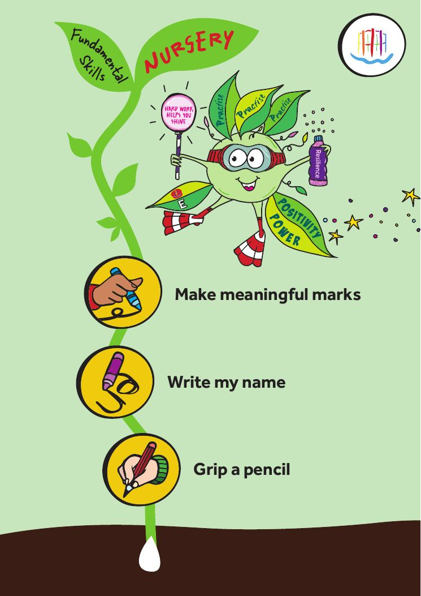

Ambitious
Every child encounters rich ideas, powerful vocabulary and meaningful challenge.
Our values-led curriculum helps every child build powerful knowledge, develop character, find their voice and understand the world around them.
Big Question
“How can one person change the world?”
We believe every child is entitled to an ambitious, inclusive and inspiring curriculum. Learning at KCA is carefully sequenced, rooted in rich knowledge and brought to life through meaningful questions, memorable experiences and purposeful final outcomes.
Every child encounters rich ideas, powerful vocabulary and meaningful challenge.
All pupils are supported to access, remember and use important knowledge.
Subjects retain their distinct knowledge while contributing to a coherent wider journey.
Every unit leads towards a learning presentation shared with a real audience.
Our curriculum was designed from first principles. These five interconnected pillars shape what we teach, how knowledge is organised and the experiences we create for children.
Our Fundamental Skills are explicitly taught, revisited and strengthened as children move through the school. Select a stage to see the expectations children are working towards and the foundations carried forward from the previous year.
Children begin by developing the physical control and confidence needed to communicate meaning through marks and early writing.

Nothing is lost; everything builds. Each stage revisits established expectations while introducing greater accuracy, control and independence.
Download the full progression bookletChildren begin with a compelling question, build secure knowledge and skills, and end by presenting their learning to an authentic audience.
A meaningful question creates curiosity and gives the unit a clear purpose.
Texts, objects, visits and experiences draw children into the learning.
Carefully sequenced teaching helps pupils know more and do more.
Children revisit prior learning and make connections across the curriculum.
Our values guide how children think, collaborate and respond to challenge.
Every unit culminates in a purposeful final outcome shared through performance, exhibition, publication, debate or presentation.
The six KCA values are not an add-on. They shape the choices, discussions and learning behaviours within every unit.
The official value characters can replace these placeholders when the artwork is ready.
See the six big questions, final learning presentations and curriculum map for each year.
This introductory content will be replaced with the final year-group overview.
Carefully planned experiences broaden horizons, build confidence and give children new ways to apply their knowledge. The homepage celebrates the programme without becoming a long event archive.
A shared creative experience in which children work with ambitious ideas, materials, artists and audiences across the school.
A celebration of possibility that introduces children to careers, pathways, people and futures they may not yet have imagined.
The design rule: this section tells the story of entitlement and enrichment. Detailed dates, galleries and event updates can remain on the main school website.
Each subject area will include its intent, progression, end points and downloadable curriculum documentation.
Across the school, children conclude units through meaningful outcomes: exhibitions, performances, speeches, films, publications, debates and showcases.
See the journey by year